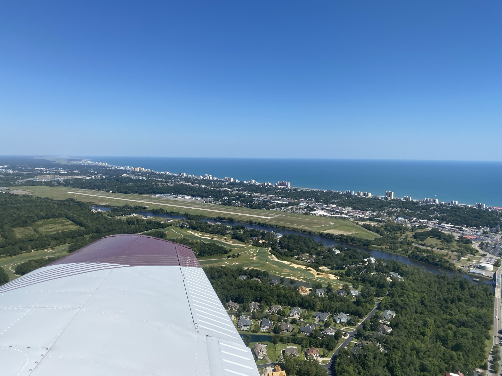
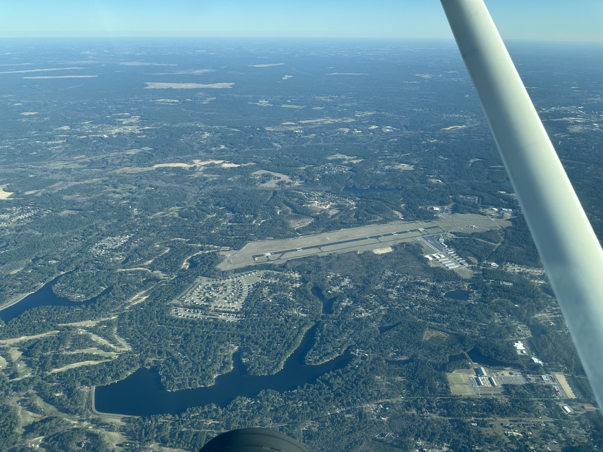
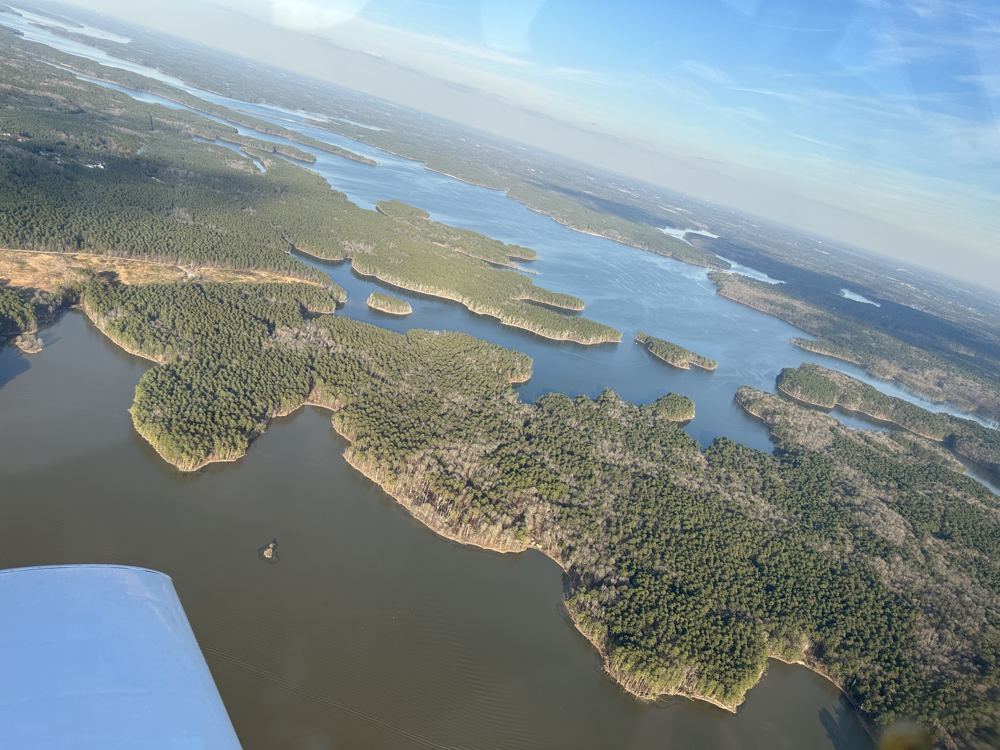
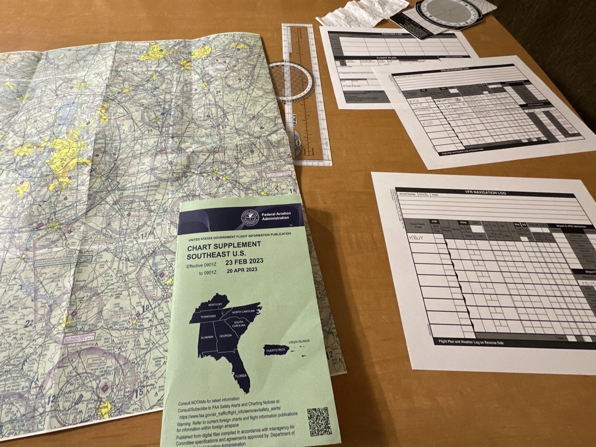
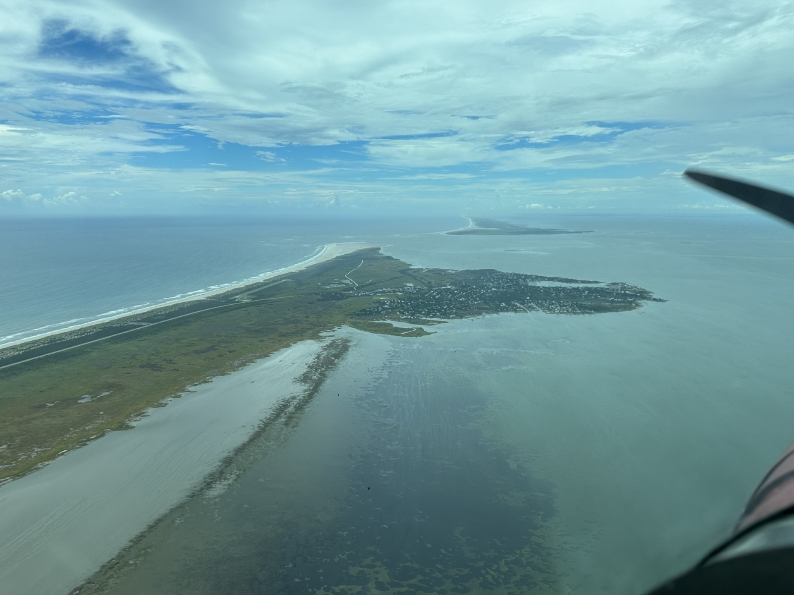
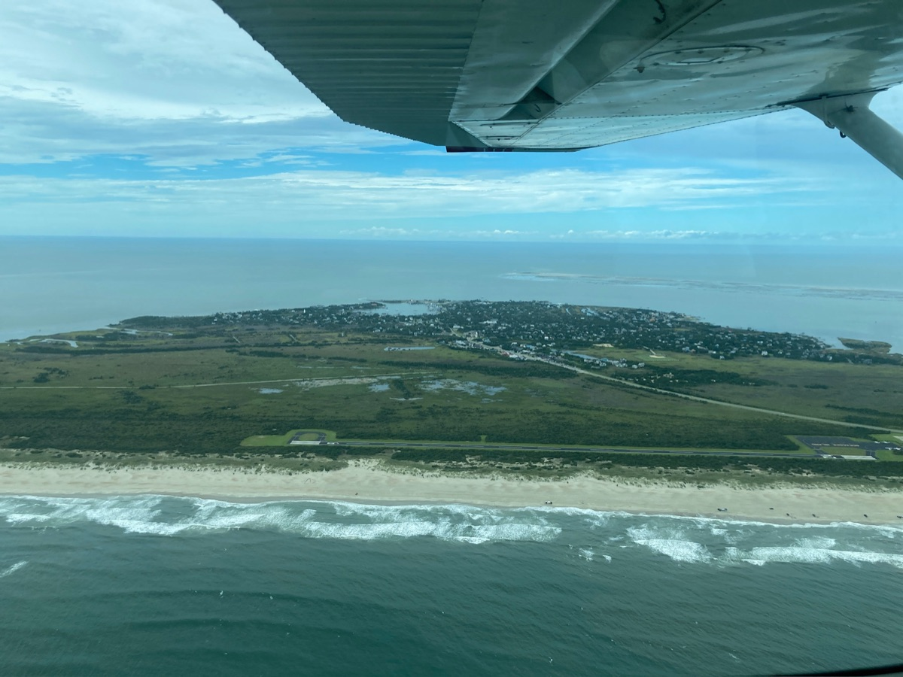
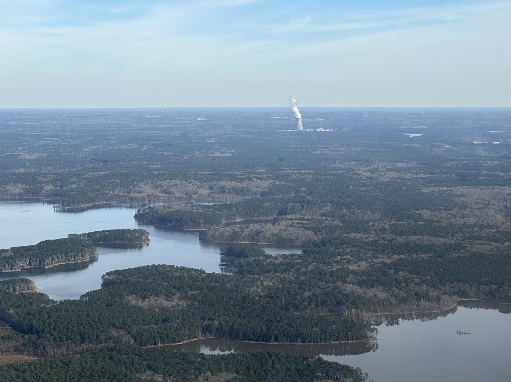

Nothing beats the perspective you get at 6,500 feet—both literally and figuratively.
certificate Private pilotsince May 2023logged 145+ hours

From the Ground Up
As a kid, a common question is, "if you could have a superpower, what would it be?" For me, that has always been the ability to fly. It's one thing I've wanted to do since I was a kid. In March 2011, I was fortunate enough to be taken up in a family friend's airplane—my first peek into general aviation. Ever since, I knew I would have to pursue a pilot's license at some point in my life.
That's not something I really knew much about beforehand, though. I had assumed it worked much like a driver's license; get it and you can fly around without much restriction. But it was only upon starting my aviation journey in March 2022 that I started to see how much there really was to this.
I never realized how long it would take. Students are told they can get their license in as little as two to four months, but mine took well over a year. I got my private pilot license on May 8, 2023. During that time, I had three different instructors and accrued 90 hours of flight time. Although I was ready for my checkride around 65 hours, I had to wait for two months before the DPE had an appointment time for me.
It's one thing to learn how to steer an airplane; it's another to learn the rules of the air.
Outside of flight training, I read numerous books, taking notes and memorizing rules and procedures. I learned more about airplane engines than I'll ever learn about cars. Meteorology became a serious field of study. Being a pilot isn't just about knowing how to take off and land; it's about having a total understanding of every flight.

Flying South over the Moore County Airport (KSOP) near Southern Pines. Fort Bragg can be seen in the distance.01 / 08
By the Numbers
145+
Flight Hours
400+
Landings
2
Aircraft Types
The Journey
From a family friend's airplane in 2011 to earning my private pilot certificate—and the memorable flights along the way.
March 2011
First Flight
Taken up in a family friend's airplane—my first peek into general aviation. I knew then I'd have to pursue a pilot's license.
March 2022
Flight Training Begins
Started my aviation journey. What I thought would take a few months turned into over a year of intense learning.
December 2022
First Solo Flight
It's remarkable how much more visibility there is when nobody is blocking your view on the right. It felt illegal at first, but unforgettable.
January 2023
First Solo Cross-Country
Overly concerned about looking out for other airplanes and remembering every step, but still quite an accomplishment.
April 2023
High Performance Endorsement
Certified to fly High Performance aircraft while waiting for my checkride.
May 2023
Private Pilot Certificate
Passed the checkride after 90 hours of flight time. Ready at 65 hours, but had to wait two months for a DPE appointment. The real learning began here.

More Than Just Flying
There's far more to aviation than I expected when I first started. I assumed it would be like getting a driver's license — learn the rules, learn the controls, and go. But it's so much more than that, and I spent countless hours on details I never anticipated.
Meteorology became a serious field of study. I had to understand not just the types of fog but how clouds form, why icing develops, and what makes a given day safe versus dangerous. Aviation maps are dense with symbols and markings, each one carrying specific meaning. I had to know by heart the rules for every class of airspace and the expectations around both towered and non-towered airports. I even had to understand airplane engines at a level I've never applied to my own car — I can't tell you much about what's under my hood, but I had to explain exactly what kind of engine was in the airplane I was flying when the DPE asked.

Learning to speak to ATC might have been the hardest part — it felt like learning a new language. At first you struggle to find the right words — the format, the phraseology, the rhythm of it all. Then, gradually, you become fluent. What makes it harder is that the radio is shared: every pilot at an airport is on the same frequency, and anyone in range can hear every transmission. There's no room for rambling. You learn to say exactly what needs to be said, in the right order, and get off the air — because someone else always needs to talk.
Safety was the biggest deal, though. Before every flight, I had to inspect every visible inch of the airplane. Everything had to be tested in every configuration before leaving the ground. In a car, you turn the key and go. In an airplane, you have to be certain — because once you're in the air, there's no pulling over. I practiced every kind of maneuver, from landing on an ultra-short runway to simulated engine failures and fires. Pretty much every scenario imaginable: studied, practiced, and known by heart.

The Maiden Voyage
Since my very first lesson, I had one goal in mind: get friends together and fly to Ocracoke Island. Tucked at the southern end of the Outer Banks, Ocracoke is about as remote as North Carolina gets. There's no bridge—the only direct way in is a two-hour ferry across the Pamlico Sound. The village is small enough to walk end to end, the mainland barely visible on the horizon. It's a genuine escape.
There's a 3,000-foot runway on the island, and for a pilot it changes everything. A trip that takes five hours by car becomes a 90-minute flight. The moment I got my license, I started planning the trip.
The flight drew on nearly every skill I'd built over the previous year. Three people in the Cessna 172 meant weight and balance calculations I hadn't previously considered, and the long distance meant I had to plan a fuel stop—something I'd never done before. I also had to coordinate with Cherry Point to fly through their restricted airspace, a process I'd never navigated. We were even legally required to carry inflatable life jackets and flares since we'd be flying over open water.
Then, on the day of the flight, two unexpected challenges emerged. Early in the flight, ATC told us our transponder wasn't broadcasting our altitude. They could see our location, but not how high we were. Not a showstopper, but definitely something to note—we'd have to periodically report our altitude. Then, approaching the Sound, a low ceiling and scattered showers moved in. Reading the weather in real time with ADS-B and talking with ATC, I made the decision to press on. Finding a safe path while keeping everyone comfortable tested my aeronautical decision-making in a way no practice flight could. What made it all the more meaningful was holding that focus and judgment across the longest flight I'd ever flown.
It worked. Every piece of preparation, every skill accumulated over 90 hours of training, came together for a single flight that would have been impossible just months earlier. We landed on that narrow strip, walked off the plane, and sat down for lunch at a seafood restaurant on one of the most remote islands on the East Coast—a place most people plan a full day around reaching. We were back home before dinner.

Flying over Ocracoke Island in the left downwind for Runway 24.01 / 05
Lessons Learned from Aviation
Checklists Save Lives
A checklist isn't a crutch—it's a discipline. Even after hundreds of hours, experienced pilots still run through them every single flight, because pressure and routine are exactly when critical steps get skipped. Aviation taught me that preparation isn't overhead; it's the whole point.
Know When to Call It Off
There's real pressure to fly when passengers have been looking forward to a trip for weeks. But if something feels off—the weather, the winds, my own readiness—the answer has to be no. Aviation leaves no room for decisions made to please other people, and that clarity carries well beyond the cockpit.
Mastery Requires Depth
You can't just learn to steer an airplane. You need to understand the engine, the weather, the airspace, the regulations, and the limits of the aircraft—and yourself. Aviation rewired how I approach learning anything: surface knowledge isn't enough when the stakes are real.

What's Next
Aviation is a journey without an end. With my private pilot certificate in hand and a high-performance endorsement earned, I'm building experience with every flight—exploring new airports, navigating different weather conditions, and refining my skills.
My personal weather minimums will expand as I gain more experience. Maybe one day I will pursue an instrument rating or commercial certificate, but for now, I'm focused on becoming a better, safer pilot with each flight. Every time I take to the sky, there's something new to learn.
Let's talk.
Open to new roles, projects, or a chat about code and flying.